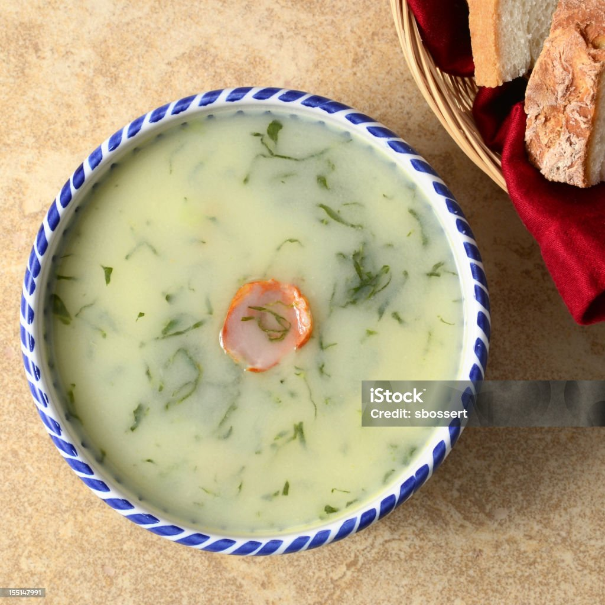

Caldo verde
Home

Description
A beloved Portuguese soup made with potatoes, kale (or collard greens), and chouriço sausage — hearty and simple.
Ingredients
- 4 medium potatoes, peeled and diced
- 1 onion, chopped
- 2 cloves garlic, chopped
- 150g Portuguese chouriço (or smoked sausage), sliced
- 150g kale or collard greens, very thinly sliced
- 2 tbsp olive oil
- 1.5L water or chicken stock
- Salt and pepper to taste
Steps
- In a pot, heat olive oil and sauté onion and garlic until soft.
- Add potatoes and cover with water/stock. Cook until tender (about 20 minutes).
- Remove from heat and blend until smooth.
- Return to the pot, add sliced chouriço, and simmer for 10 minutes.
- Add shredded kale/collard greens and cook briefly until just wilted (about 5 minutes).
- Adjust seasoning with salt and pepper.
- Serve hot with crusty bread.